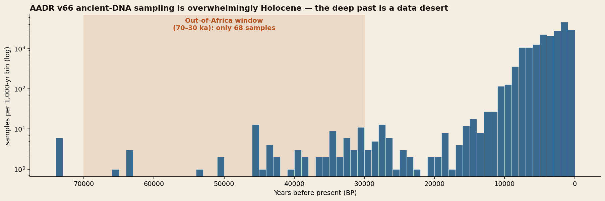
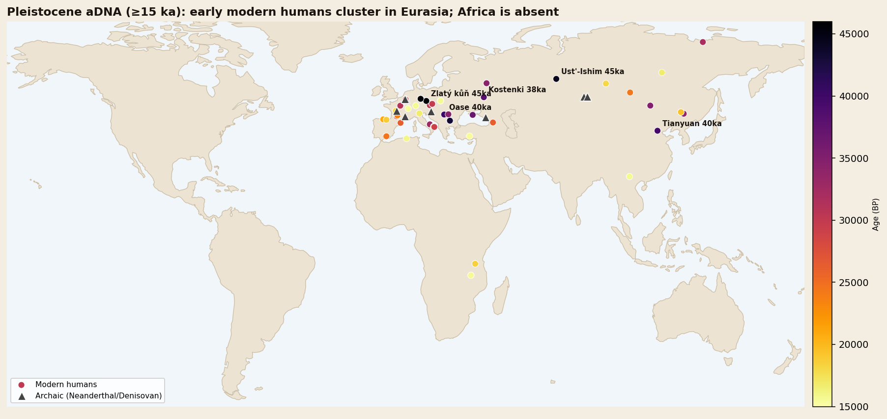
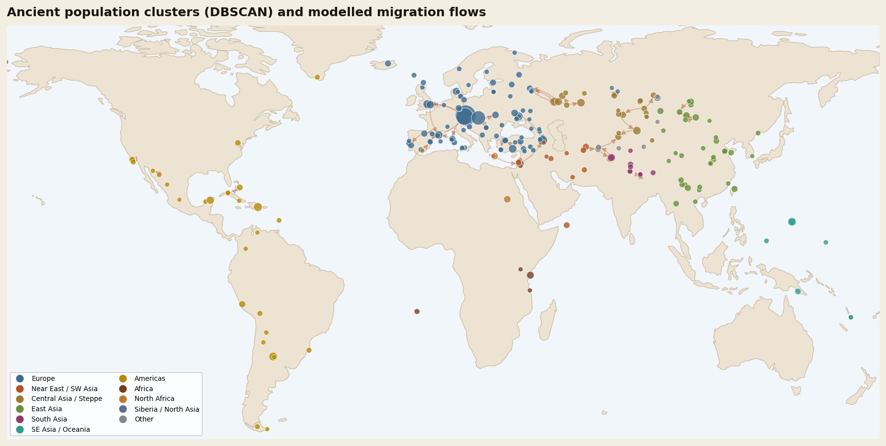

Clusters, candidate connections & the deep-time frontier
Toggle the layers below. Population clusters are spatio-temporal groups found by DBSCAN, sized by sample count and coloured by region. Candidate connections link an older group to a younger, geographically reachable neighbour with a similar uniparental-haplogroup profile. They are hypotheses to test—not direct evidence of migration. Pleistocene samples are the rare Ice-Age genomes (≥15,000 years old).
Top five migration events
Ranked for global significance, prioritising the Out-of-Africa dispersal. Each event pairs the genomic signal with the environmental and technological pressures that drove it.
The Out-of-Africa dispersal
Modern humans expanded from Africa along a southern coastal arc and a northern continental route, reaching Siberia (Ust'-Ishim, ~45 ka), Europe (Zlatý kůň, Bacho Kiro) and China (Tianyuan, ~40 ka) — meeting and interbreeding with Neanderthals on the way.
Drivers: MIS 3 climate swings and humid "Green Arabia" pulses opened and closed corridors; fully modern cognition powered rapid range expansion.
Confidence: Moderate — outcome confirmed, route inferredAnatolian farmers settle Europe
The first farmers spread agriculture across Europe in a wave of people, not just ideas. The diagnostic Y-haplogroup G2a dominates early European farmers and is near-absent in the hunter-gatherers they replaced.
Drivers: early-Holocene warming made rain-fed cereal farming viable; agriculture's higher carrying capacity fuelled demic diffusion.
Confidence: HighThe Steppe (Yamnaya) expansion
Pastoralists from the steppe (Khvalynsk → Yamnaya, carrying R1b/R1a) swept west as Corded Ware and Bell Beaker, in places replacing up to ~75% of the local gene pool — a second remaking of Europe.
Drivers: wagons, horses and dairy pastoralism; the 5.2 ka and 4.2 ka aridification events favoured mobile herders; possibly early plague.
Confidence: HighPeopling of the Americas
A founding population crossed the Bering land bridge and spread the length of two continents with astonishing speed. Every Indigenous American cluster carries the Beringian founder signature (Y-hg Q1b); Anzick-1, ~12.7 ka anchors the lineage.
Drivers: low glacial sea level exposed Beringia; post-LGM deglaciation opened both coastal and interior routes after a genetic "standstill".
Confidence: HighThe Austronesian / Lapita expansion
Seafarers carried an Asian genetic signature (Y-hg O) across the Pacific to Vanuatu, the Marianas (Guam Latte / Chamoru) and ultimately Polynesia, later mixing with Papuan populations.
Drivers: outrigger and double-hulled canoes plus open-ocean navigation; a farming-and-fishing package that made distant islands habitable.
Confidence: HighThe data is Eurocentric and Holocene-heavy
A responsible analysis foregrounds its own gaps. Ancient DNA survives best in cool, recent, well-excavated places — which badly skews what we can see.


Reading the human journey from a partial archive
The story this dataset tells is, at first, a story about its own gaps. We assembled 19,029 ancient individuals from the Allen Ancient DNA Resource, each carrying a place, a date, a curated ancestry label and, often, a paternal and maternal haplogroup. Yet when we plot those samples through time, 99.6 percent of them are younger than 30,000 years, and more than two-thirds come from Europe. The very window we set out to prioritise — the Out-of-Africa dispersal between 70,000 and 30,000 years ago — contains just sixty-eight individuals, and the African homeland that launched every later migration is represented by fewer samples than a single medieval European cemetery. Any honest reconstruction must therefore separate what the genomes confirm from what we infer around their silences.
The metadata still recovers recognizable structure. Unsupervised DBSCAN on geography and time produced 226 spatio-temporal groups, and several high-scoring connections line up with migrations already supported by genome-wide studies and archaeology: Anatolian farming expansions, Steppe-related movements, and the peopling of Remote Oceania. That agreement is a useful sanity check, not independent confirmation. A top-ranked edge means only that two groups satisfy this model's age, distance and haplogroup-profile rules.
Beyond Eurasia, the founder signatures are equally clean. Every Indigenous American cluster, from Anzick-1 in Pleistocene Montana to the Classic Maya, carries the Beringian Q1b paternal lineage — the fingerprint of a small population that paused in a glacial refugium while sea levels were low, then spread the length of two continents once deglaciation opened the coastal and interior routes. In Remote Oceania, the Mariana Islands' Latte-period people and the settlers of Vanuatu carry East Asian O lineages, the maritime calling-card of the Austronesian expansion that outrigger canoes made possible. In each case the driver is legible: a climate door opening, a technology unlocking new range, or a demographic engine — farming's carrying capacity — pushing one people into another's land.
The deepest and most important migration, however, we can only see in silhouette. The Out-of-Africa dispersal left no in-window genomes in its African or Arabian source. We infer it instead from its descendants: Ust'-Ishim in Siberia and Zlatý kůň and Bacho Kiro in Europe, all near 45,000 years old, with the Oase individual preserving a Neanderthal ancestor only a handful of generations back. From these downstream points, and from the climate record of MIS 3 with its intermittently "green" Arabia, we reconstruct a dispersal threading humid corridors out of Africa during favourable pulses — a confident outcome resting on an inferred route.
The methodological honesty matters as much as the pattern. The multi-gigabyte genotype matrix was not processed, the climate layer provides historical context rather than a causal test, and the clustering depends on a tuned space-time exchange rate. The map is therefore an exploratory hypothesis generator. The clearest message is double-edged: ancient DNA has transformed recent Eurasian prehistory, while the older, tropical and African chapters remain frustratingly, instructively blank.
Methods, data & downloads
The full pipeline and every intermediate output are available below.

| Step | Method | Output |
|---|---|---|
| Source | AADR v66.p1 annotation file (Harvard Dataverse, doi:10.7910/DVN/FFIDCW) | 23,089 individuals → 19,029 ancient samples |
| Clean & unify | Filter to dated, geolocated ancient samples; derive region & climate context | unified_samples.csv |
| Cluster | DBSCAN in 3-D Earth-Cartesian geography + time (2.5 km/yr exchange rate, eps=360 km) | 226 clusters · cluster_summary.csv |
| Score connections | Directed candidates: older→younger, haplogroup-profile cosine × proximity × recency; not genome-wide migration tests | 8,205 candidates · migration_flows.csv |
Suggested next steps
- Ingest the genotype matrix and run genome-wide PCA / qpAdm / F-statistics to replace haplogroup proxies and quantify admixture per migration.
- Merge real paleoclimate series (NOAA/PANGAEA cores) by space-time nearest-neighbour to test climate causation statistically.
- Target the gaps: prioritise African, Arabian and South/SE Asian Pleistocene sampling; integrate sedimentary aDNA.
- Apply spatially-explicit coalescent / diffusion models to estimate migration rates and directions with uncertainty.
- Overlay pathogen aDNA (e.g. Yersinia pestis) to test disease as a co-driver of population turnovers.
Explore the same dataset on a 3D globe
The analysis on this page works with 19,029 dated, geolocated ancient samples drawn from the Allen Ancient DNA Resource. If you would rather explore the raw dataset directly than read the clustering results, the AADR Genome Atlas puts all 23,089 individuals on an interactive globe.
The atlas plots each individual at its excavation coordinates and lets you move through time, filter by archaeological culture, publication, region or genetic sex, and search by site, culture or paper. Because it renders the unfiltered resource rather than this page's cleaned subset, it also makes the sampling gaps obvious — the dense clouds over Europe and the Eurasian steppe, and the thin scatter across Africa, Arabia and South Asia that limits what any analysis built on this data can currently claim.
It is a WebGL application and needs a reasonably modern browser; on older phones it may fall back to a slower renderer. Everything it draws comes from the same AADR v66.p1 annotation file cited above.